今天是2026年8月23日，星期日，做个简单的复盘。
成交量连续两日的缩量，再次跌漏2万亿元，周五市场弱反弹。创业板中阳领涨，上证和科创50微涨收平。截至收盘，各主要指数表现如下：
- 上证指数收盘3905.20点，收涨0.04%，最高点3912.13点，最低点3883.79点，缩量收阳，成交额8834.24亿元；
- 创业板指收盘3545.58点，收涨1.43%，最高点3563.06点，最低点3478.52点，缩量中阳，成交额4944.85亿元；
- 科创50收盘1653.56点，收涨0.04%，最高点1675.82点，最低点1640.62点，缩量收阳，成交额775.73亿元。
成交额：沪深两市合计成交约18923亿元，较上一交易日20939亿缩量约2017亿，缩幅约9.63%。两市成交已连续两天萎缩（周二25300亿→周三20939亿→周五18923亿），量能持续萎缩，资金观望情绪浓厚。三指数全部连续缩量，上证缩至8834亿创近期新低，远低于12000亿标准；创业板缩至4945亿远低于6300亿标准；科创50缩至776亿创近期新低，远低于1400亿底线。
个股表现：全市场涨停57家，跌停14家。涨停数量较昨日83家明显下降，跌停家数与昨日13家基本持平。中位数-0.11%，全市场2505家股票上涨、2862家下跌、182家平盘，赚钱效应44.7%，较昨日73.8%大幅回落。指数虽然收红，但个股跌多涨少，赚钱效应不佳，说明反弹主要集中在大盘股，中小盘股仍承压。
涨停分析：周五57股涨停。
汉森制药3连板为市场最高连板。昨天4连板的金健米业今日断板，市场最高标从4板降至3板，市场情绪有所退潮。2连板方向：深中华A、双鹭药业、键凯科技、中关村、贝瑞基因、哈森股份、科森科技、近岸蛋白、宇环数控、通鼎互联。
涨停行业分布：
通信设备6家、化学制药4家、化学制品4家、消费电子4家、专用设备4家、通用设备3家、塑料3家、贵金属2家、电网设备2家、汽车零部2家、工业金属2家、中药1家、医疗服务1家、生物制品1家、半导体1家、其他电子1家、燃气1家、金属新材1家、一般零售1家、服装家纺1家、饰品1家、包装印刷1家、光学光电1家、照明设备1家、房屋建设1家、家居用品1家、炼化及贸1家、能源金属1家、电池1家。
通信设备方向6家涨停为今日最强主线，通鼎互联72.6亿成交额为涨停池第一大成交额，星网锐捷24.1亿、中瓷电子22.0亿，资金进场坚决。
医药生物方向从昨日37家骤降至7家，退潮明显。
成交额TOP10涨停股：通鼎互联72.6亿、湖南白银43.1亿、旭光电子37.8亿、盛达资源33.5亿、士兰微27.0亿、星网锐捷24.1亿、诺德股份22.9亿、白银有色20.2亿、融捷股份19.7亿、飞龙股份16.5亿。
开盘八法

周五上证开盘是反覆高盘，收小红，符合开盘预期，内困三日翻红；
创业板指开盘瞬间低盘，收中红，符合开盘预期，内困三日翻红；
科创50指数开盘是震荡低盘，收小红，符合开盘预期。
指数虽然是收涨的，但是成交量极速缩量，这是瑕疵。
周五是股指期货交割日，指数运行平稳，符合预期。
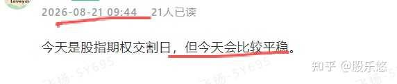
回顾昨日的复盘：多头孕育线，第一个止跌讯号

上证周五的K线组合是内困三日翻红，第二个止跌讯号，但是量能不够。
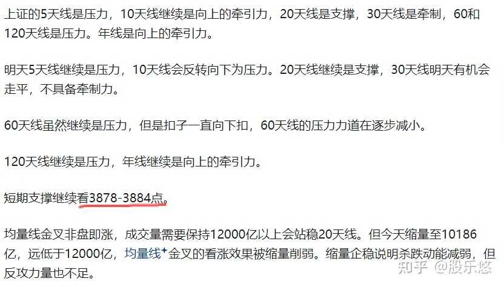
周五最低点为3883.79点，刚好到3884点支撑位。
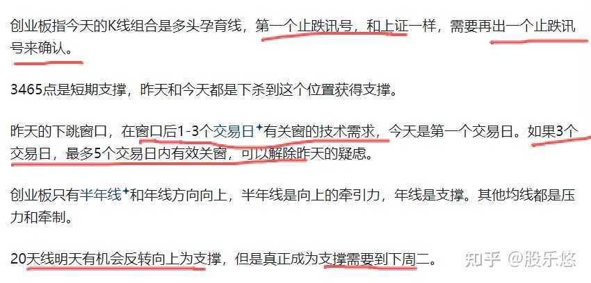
创业板指周五继续向上关窗动作，K线组合是内困三日翻红，第二个止跌买讯。
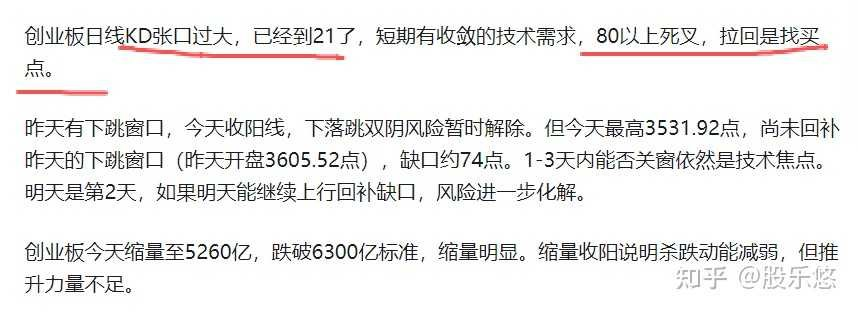
创业板指数周四的KD张口过大，有技术收敛的需求，周五上涨符合预期。
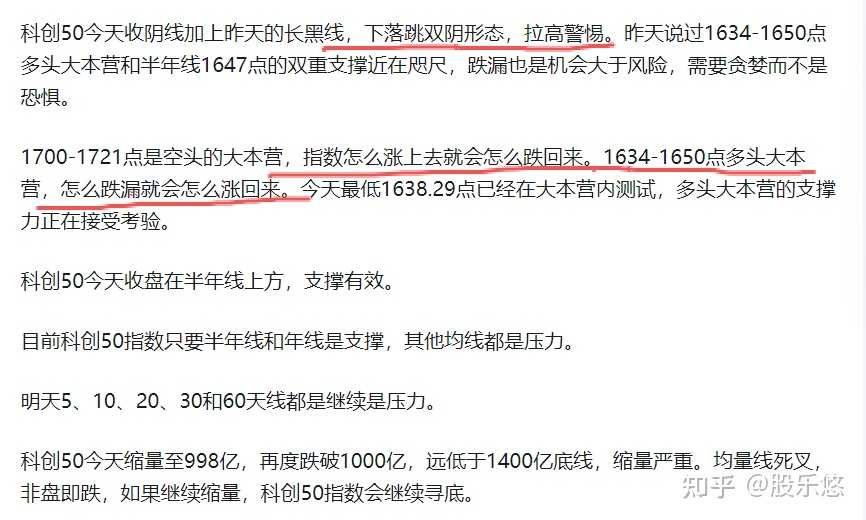
科创50指数周五最低点1640.62点，再次测试了1634-1650点支撑区。
回顾一下上周的周复盘：量能不济，震荡时间会拉长
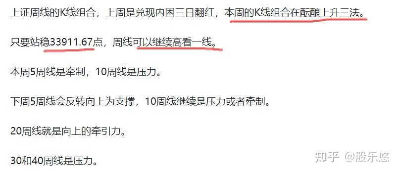
上周上涨站上3911.67点，所以本周冲到3994点，被10周线压制，上证本周继续是酝酿上升三法。
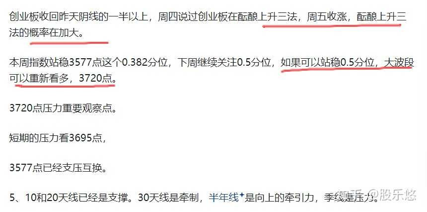
创业板本周越过了3740点，可惜没有站稳3720点，再次被压回。
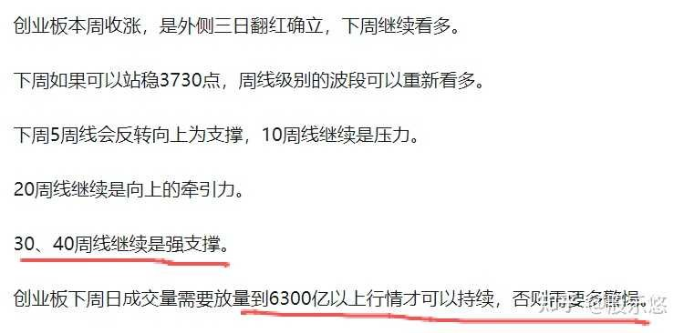
创业板本周40周线是强支撑，量能不足，指数被拉回。
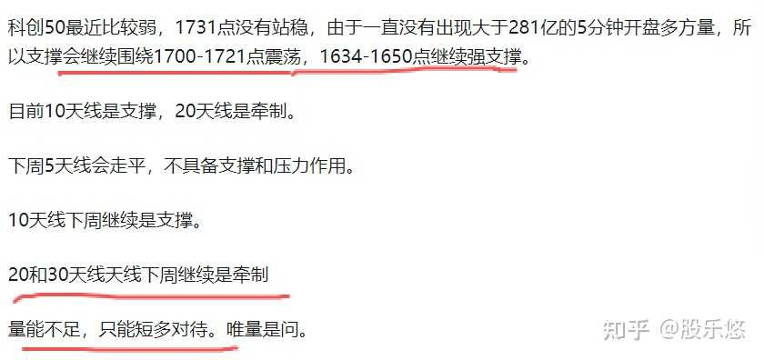
科创50指数本周继续围绕1700-1721点震荡，1634-1650点继续是强支撑。量能不足，只能短多对待。
热点板块深度解析
周五盘面的核心特征是"缩量弱反弹，通信设备接棒医药成为最强方向"。
通信设备方向6家涨停，今日最强主线
通信设备方向今日6家涨停：通鼎互联、星网锐捷、东信和平、瑞斯康达、中瓷电子、楚天龙。通鼎互联72.6亿为涨停池第一大成交额，连续2连板。星网锐捷24.1亿、中瓷电子22.0亿，大成交额个股密集，资金进场坚决。通信设备方向周五是资金合力最明确的方向，可能与5G/算力基础设施预期有关。但以首板为主，持续性仍需观察下周一验证。
医药生物方向退潮，从37家降至7家
医药生物方向今日仅7家涨停（化学制药4家、中药1家、医疗服务1家、生物制品1家），较昨日37家大幅萎缩。汉森制药3连板为医药方向最高连板，也是全市场最高标。键凯科技2连板20cm涨停。但整体来看，医药板块从昨日绝对王者退潮明显，资金开始向通信设备方向切换。医药板块中长线主线观点不变，但短期需要消化获利盘，等待回调后的低吸机会。
贵金属/有色方向4家涨停
湖南白银43.1亿、盛达资源33.5亿、白银有色20.2亿、豪美新材4家涨停。贵金属方向大涨可能与黄金价格创新高有关。大成交额个股密集，但持续性待观察，与外围大宗商品走势联动。
消费电子方向4家涨停
科森科技2连板、可川科技、共达电声、国光电器4家涨停。消费电子方向持续有异动，可能与苹果新机周期相关。
金健米业4连板断板，市场高度回落
昨天4连板的金健米业今日断板，未出现在涨停池中。市场最高标从4板降至汉森制药3板，连板高度回落，说明市场情绪虽有企稳但尚未完全修复。
指数复盘
与昨天的缩量企稳不同，周五市场继续缩量弱反弹。创业板中阳领涨是亮点，但上证和科创50几乎平盘报收。两市成交连续三天萎缩至1.89万亿，资金观望情绪浓厚。
延续7月23日复盘的宏观框架：7月踩熊左脚已兑现，8月底黄金坑技术熊右脚要落地。8/19黑天鹅加速了下杀，但不改变宏观框架，反而可能加速右脚落地。
上证
1、日线图
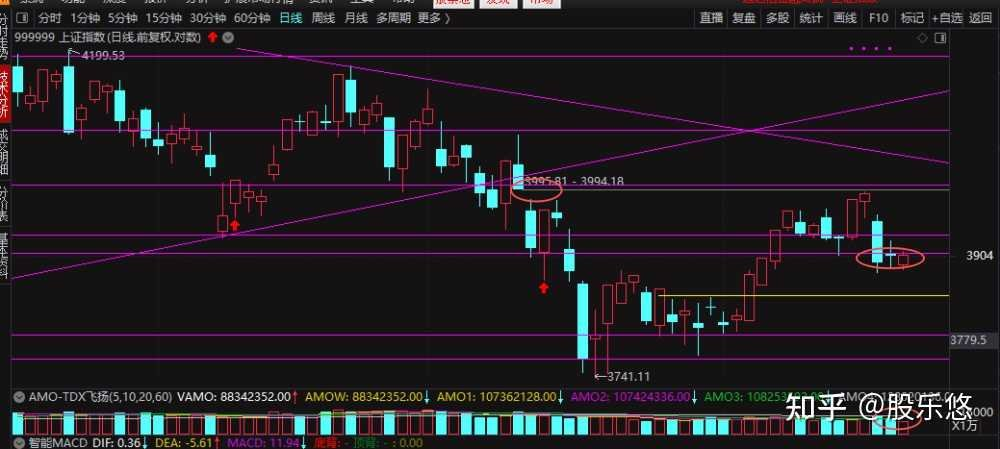
上证指数的K线组合内困三日翻红，第二个止跌讯号，周四是多头孕育线。短期的疑虑是如果短期3天线内不能收回周三阴线的中点，需要谨防下降三法。
短期最大的问题是量能不足，目前均量线是死叉状态，死叉非盘即跌。
下周量能需要放量到11000亿以上，才可以有上攻的条件，否则需要多小心。
支撑继续看3878-3884点。
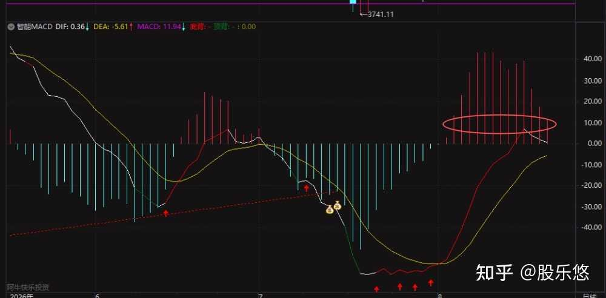
日线macd运行14个交易日了，越过了12个交易日，多头周期还没有走完，但是需要量能跟上，否则也需要多警惕。
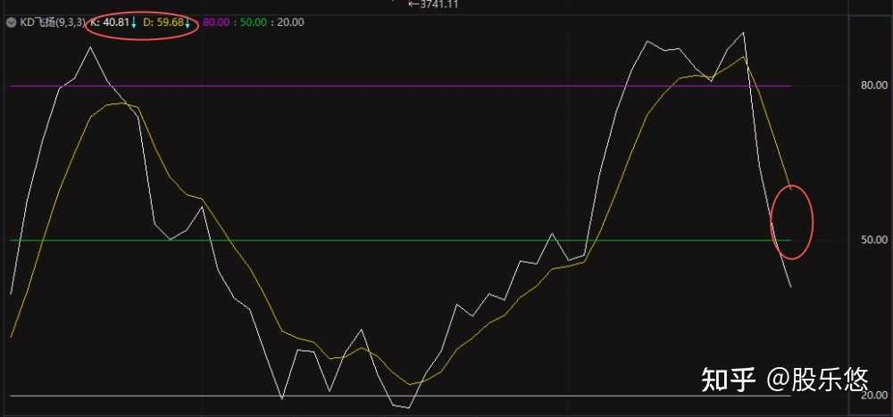
观点不变，目前KD张口19，死叉后第3、6、9天3的倍数找买点。周五是死叉后第2天，还不是买点时间窗口。如果明天继续震荡，第3天（下周一）是第一个买点观察窗口。
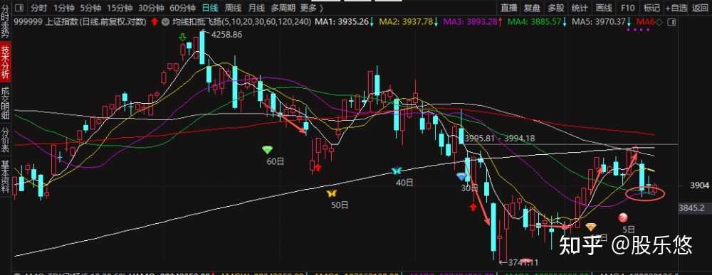
上证指数5、10、60和120天线继续是压力，30天线是牵制，20天线是支撑，年线是向上的牵引力。
下周5天线上本周继续是压力，后半周有机会反转向上为支撑；
10天线下周继续是压力。
20天线是下周继续是支撑或者是向上的牵引力。
30天线下周上半周继续是牵制，下周后半周有机会反转向上为支撑。
60天线和120天线继续压力。年线是向上的牵引力。
短期至少放量收复3927.85点，才能看高一线。
波段观点不变：4043-4066点怎么跌下去后面就会怎么拉回来。短期在3900点附近反复震荡积蓄力量。
2、周线图
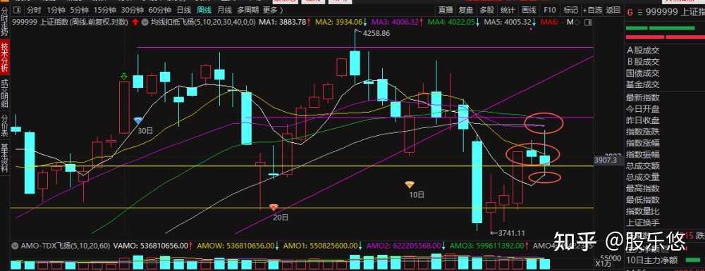
上证本周5周线是支撑，10周线是压力，本周最高点3994.18点，接近40周线，40周线是压力。
下周5周线继续是支撑，10、20、30和40周线继续是压力。
K线组合还是在酝酿上升三法，量能不足，只会拉长震荡时间。
从周线看指数至少还需要震荡1周，下下周40周线会反转向上为支撑，但是20和30周线继续是压力，所以指数的上涨目标位也只能看4043-4066点。
创业板指
- 日线图
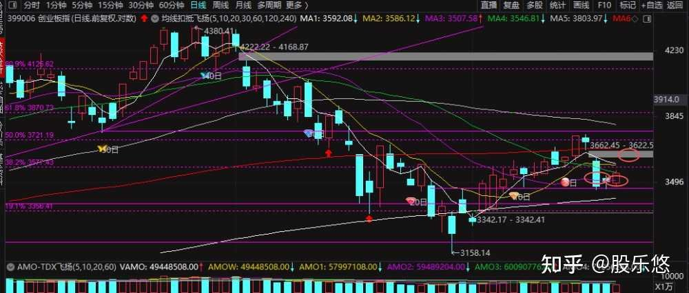
创业板周五的K线组合是内困三日翻红，第二个止跌买讯，周五收盘在周三的阴线一半以上，化解了下降三法疑虑，下周重点看能不能有效关窗（3622.5-3662.45点），如果有效关窗可以继续高看一线，如果上半周不能有效关窗需要多警惕，因为右脚还没有确立。
短期支撑继续3465点。
创业板的均量线也是死叉状态，下周必须补量且持续有量，量能需要放量6400亿以上。
创业板指数目前5、10、30和60天线是压力，20天线是支撑，120天是向上的牵引力。
下周5天线下周一和下周二继续是压力，从周三开始会反转向上为支撑。
10天线下周会走平，不具备支撑和压力作用。
20天线下周一会短暂反转向下为牵制，一直基本都是牵制。
30天下周一至周四都是牵制，下周五会反转向上为支撑。
60天线继续是压力，120天线继续是向上的牵引力。
- 周线图
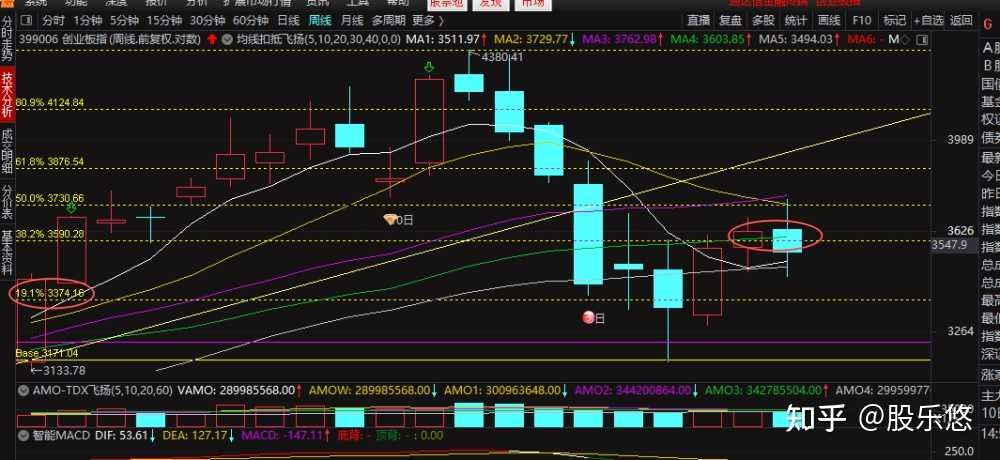
创业板指周线图的K线组合是阴线吞噬线，下周必须放量上涨，否则指数会再次去测试3374点符合。
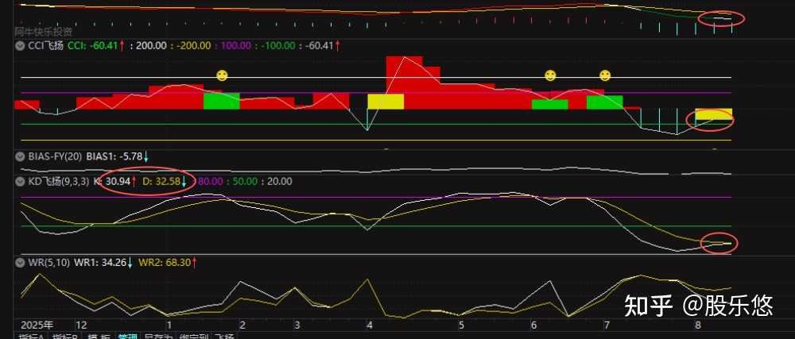
周线从从指标看，macd空头周线还没结束，还需要继续运行大约6周，所以指数会继续震荡。
周KD金叉在即，cci指数上穿-100，所以指数不需要多悲观，关键看量能，但是需要唯量是问。
科创50指数
- 日线图
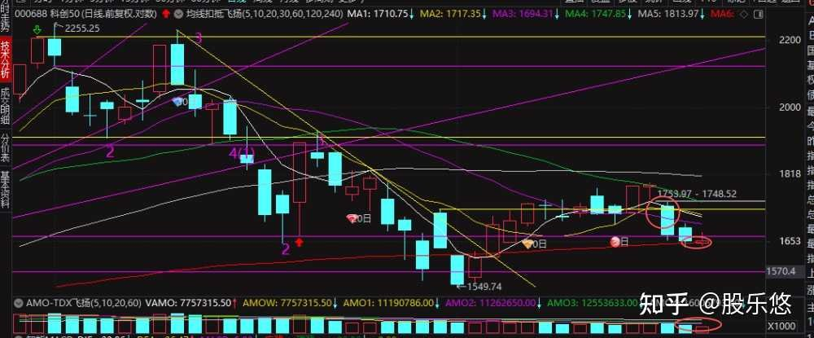
科创50指数上周四下落跳双阴性重要的卖讯，周五是颈内线，第3个卖讯。
短期1634-1650点是支撑、年线是支撑。
但是短期观点不变：1700-1721点是空头的大本营，怎么涨上去就会怎么跌回来。1634-1650点多头大本营，怎么跌漏就会怎么涨回来。
周五最低1640.62再次深入大本营内测试，收盘1653.56回到大本营上方。连续两天在大本营内测试支撑，低点从昨天1638.29抬高至周五1640.62，支撑力有所显现。
目前科创50指数只要半年线和年线是支撑，其他均线都是压力。周五收盘在半年线1647上方，支撑暂时有效。
科创50周五缩量至776亿，创近期新低，远低于1400亿底线。均量线死叉非盘即跌，如果继续缩量，科创50指数会继续寻底。
短期继续关注上周三的下跳缺口能不能有效关窗。
下周5天线的上半周继续是压力，后半周有机会反转向上为支撑。
10天线继续是压力。
20天下周一至周三都是压力，周四有机会反转向上为支撑。
30和60天线下桌继续是压力。
- 周线图
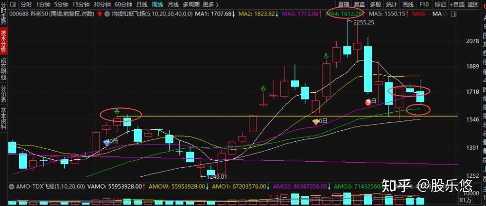
科创50指数周线跌漏上上周的阳线一半，弱势的表现，但是只要有量，还有机会上升三法。
5、10周线都是压力，20周线是向上的牵引力，30周线是支撑。
下周5、10周线继续是压力，20周线继续是向上的牵引力。20周线以下机会大于风险。目前20线在1713点。
操作策略和关键观察点
成交量监控：周五两市成交约1.89万亿，较昨日2.09万亿继续缩量2017亿，量能持续萎缩是最大隐忧。下周一量能变化是核心观察点：如果放量收阳，企稳确认；如果继续缩量，震荡时间进一步拉长。
KD买点窗口：上证KD死叉后第2天，下周一（8/24）是第3天，第一个买点观察窗口。如果下周一缩量企稳或放量收阳，可能是买点确认。
创业板关窗：8/19下跳窗口周五第2天未关，最高3563距窗口下沿3605还有42点。下周一第3天是关键时间窗口。5个交易日内有效关窗可解除疑虑。
通信设备方向：今日6家涨停为最强主线，通鼎互联72.6亿2连板领涨。关注下周一持续性，是否有3连板个股出现。
医药生物退潮：从37家降至7家，短期获利盘兑现。但中长线主线观点不变，等待回调后的低吸机会。
金健米业断板：4连板断板，市场高度回落至3板。市场情绪虽有企稳但尚未完全修复。
板块配置建议：
通信设备方向：今日最强6家涨停，通鼎互联72.6亿2连板领涨。但以首板为主，下周一持续性是关键观察点。
医药生物方向：短期退潮但不改中长线主线判断。等待回调后低位补涨标的的低吸机会。
贵金属/有色方向：4家涨停，受益于黄金创新高。但持续性待观察，与外围大宗商品走势联动。
消费电子方向：4家涨停持续异动，关注苹果新机周期催化。
风险提示：
外部不确定性：美债收益率维持高位，外围环境仍不稳定。持续关注美债收益率变化和下周一美股走势。
今天就复盘到这里。更好的技术交流和互动请到：我的圈子、我的互动群。
一切都没有变，变的是自己的心态。按照自己的"规划行情，把握行情、跟随行情、应变行情"，做好资金策略，控制好合理仓位，调整好自己的心态，自己节奏不能乱，冷静交易。要顺势而为，不能刻舟求剑。稳住，咱们能赢！！道阻且长，行则将至；行而不辍，未来可期。
以上个人观点仅供参考，不构成投资建议。